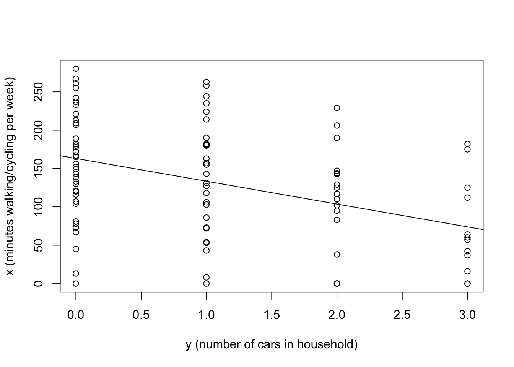

Call:
lm(formula = x ~ y)
Coefficients:
(Intercept) y
163.13 -29.75

A simple random sample (SRS) is the simplest form of sampling. It is used if no structure is known in the population or if it is homogeneous. A list of the population members needs to be available. If all possible samples of size \(n\) from a population of \(N\) have equal probability of being drawn, then the sampling is said to be SRS. The number of such samples (the number of different selections of \(n\) things from \(N\), neglecting order) is \[{N \choose n}=\frac{N!}{n!(N-n)!}\] and so the probability of each is \(1/{N \choose n}\).
Consider a particular sample \(X_1,\ldots ,X_n\). Then the probability of drawing the items in the order written is \[P(x_1=X_1,\ldots ,x_n=X_n)=\frac{1}{N} . \frac{1}{N-1} \ldots \frac{1}{N-n+1} = \frac{(N-n)!}{N!}\] and since there are \(n!\) possible orders in which \(X_1,\ldots ,X_n\) could appear (and still count as the same sample) the probability that a sample consists of \(X_1,\ldots ,X_n\) in any order is \[\frac{n! (N-n)!}{N!} = 1/{N \choose n}.\]
Proof.
The number of samples in which \(x_i=X_r\) is the number of ways of choosing values for the other \(x\)’s, which is (taking order into account) \(\frac{(N-1)!}{(N-n)!}\) (the number of permutations of selecting \(n-1\) objects from \(N-1\)); hence the probability in (1) is this divided by the number of ways of choosing all of the \(x\)’s, \(\frac{N!}{(N-n)!}\) (the number of permutations of selecting \(n\) objects from \(N\)), and so is \(1/N\).
Follows from (1).
Note that var\((x_i) = E(x_i^2)-(Ex_i)^2\), and \(E(x_i^2)=\frac{1}{N}\sum_1^N X_r^2\) by (i) and \(E(x_i)=\overline{X}\) by (ii), so that var\((x_i)= \frac{1}{N}\sum X_r^{2} - \overline{X}^2 = \frac{1}{N} \sum (X_r-\overline{X})^2\).
Similarly to (1), the number of samples in which the \(i\)th and \(j\)th elements are fixed as \(X_r\) and \(X_s\) respectively is \(\frac{(N-2)!}{(N-n)!}\), and so the probability is this divided by \(\frac{N!}{(N-n)!}\).
Note that cov\((x_i,x_j)=E(x_ix_j)-\overline{X}^2\) and use the fact that \[\begin{align} E(x_ix_j) &= \frac{1}{N(N-1)}\sum \sum _{r\neq s}X_rX_s \\ &=\frac{1}{N(N-1)}\left( (\sum X_r)^2 - \sum X_r^2 \right) \\ &=\frac{1}{N(N-1)}\left( N^2\overline{X}^2-\{(N-1)S^2+N\overline{X}^2 \}\right)\\ &=\overline{X}^2 - \frac{S^2}{N}. \end{align}\]
Proof. For any constants \(c_1, \ldots,c_n\) \[\begin{align} \mbox{var}(t)&=\sum c_i^2~\mbox{var}(x_i)+\sum \sum_{i\neq j}c_i c_j\mbox{ cov }(x_i,x_j) \\ &=\frac{N-1}{N} S^2 \sum_1^n c_i^2 + \sum \sum_{i \neq j}c_i c_j\left(-\frac{S^2}{N}\right) \\ &=S^2 \sum_1^n c_i^2 - \frac{S^2}{N} \left(\sum _1^nc_i \right)^{2} \\ &=S^2\left\{\sum_1^n\left(c_i-\frac{1}{n}\right)^2+\frac{2}{n}\sum_1^n c_i-\frac{1}{n} \right\}-\frac{S^2}{N}\left(\sum_1^n c_i\right)^2 . \end{align}\] For unbiasedness, \(\left(E(t) = \overline{X}\right)\) we must have \(\sum _1^nc_i=1\) and then the first term in the curly bracket above is a sum of squares and takes its minimum value of zero when \(c_i=1/n\) for each \(i\), which satisfies the unbiasedness constraint. Substituting back, we get \[\mbox{var}(t)=\text{var}(\overline{x})=S^2\left\{0+\frac{2}{n}-\frac{1}{n}\right\}-\frac{S^2}{N}=\left(1-\frac{n}{N}\right)\frac{S^2}{n}.\] Note that var\((\overline{x})\) depends on
the population variance \(S^2\);
the sample size \(n\);
the sampling fraction \(f=n/N\).
Consider a sample of size \(n\). For an infinite population we have var\((\overline{x})=\sigma^2/n\) where \(\sigma^2\) is the population variance. For a finite population we have \[ \text{var}(\overline{x})=(1-f)S^{2}/n. \tag{11.1}\] \(1-f\) is called the finite population correction. If the sampling fraction \(f\) is small, then \(1-f \approx 1\). In practice the finite population correction can be ignored when \(f\) is small, typically \(f \leq 0.05\)
The formula for var \((\overline{x})\) is used:
to estimate the precision obtained in the survey;
to compare the precision obtained with that given by other sampling schemes (for example the stratified SRS considered later);
to estimate the sample size needed to achieve a specified precision.
However the formula depends on \(S^2\), which is usually unknown, so it is estimated from the sample, by the sample variance \(s^2\), defined as \[s^2 = \frac{1}{n-1} \sum_1^n (x_{i}-\overline{x})^{2} = \frac{1}{n-1} \left( \left\{\sum_1^n x^2_{i}\right\}-n\overline{x}^{2}\right)\] giving \[\widehat{\text{var}(\overline{x})}=\left(1-\frac{n}{N}\right)\frac{s^2}{n}.\] where \(\widehat{\text{var}(\overline{x})}\) is the estimated variance of the sample mean. Under SRS \[E(s^2) = S^2.\] and so the above is an unbiased estimator of var\((\overline{x})\). We prove this as follows: \[\begin{align} E(n-1)s^2 &= E\left( \sum_{i=1}^n (x_i - \overline{X} + \overline{X}- \overline{x})^2\right) \\ &=E\left(\sum_1^n(x_{i}-\overline{X})^2-n(\overline{x} - \overline{X})^{2}\right)\\ &=\frac{n(N-1)}{N} S^2 - n \left(1-\frac{n}{N}\right)\frac{S^2}{n}\\ &=(n-1)S^2. \end{align}\]
Confidence intervals for \(\overline{X}\) are usually based on the assumption that under SRS \[\overline{x} \sim N(\overline{X},(1-f)S^2/n)\] approximately. Using this approximation, we then have \[\frac{\overline{x}-\overline{X}}{\sqrt{(1-f)S^2/n}}\sim N(0,1)\] and if \(S^2\) is unknown replace it by \(s^2\) and assume \[\frac{\overline{x}-\overline{X}}{\sqrt{(1-f)s^2/n}} \sim t_{n-1}\] and obtain \[\overline{x}\pm t_{n-1,0.025} \sqrt{(1-f)s^2/n}\] as the approximate 95% confidence interval for \(\overline{X}\), where \(t_{n-1,0.0.025}\) is the 0.975 quantile of the \(t_{n-1}\) distribution. Two reasons why the normal approximation might not be ‘good’ are
the underlying population distribution is (heavily) skewed;
the sample is drawn from a finite population: the distribution of \(\bar{x}\) may not be well approximated by a continuous distribution.
These issues are discussed briefly below, but both issues can be investigated further using simulation.
For infinite populations with finite variance the normal distribution assumption is true asymptotically as \(n \rightarrow \infty\) by the standard central limit theorem. There are various versions of the central limit theorem for finite populations in which normality of \(\bar{x}\) can be derived (see the discussion in Sugden et al. for references), but as far as I know no useful practical guidance about necessary sample sizes exists.
The larger \(n\), the more precise is \(\overline{x}\) as an estimate of \(\overline{X}\), but usually the more costly the sampling. A compromise between precision and cost can often be worked out by the following method.
The user specifies an acceptable width \(d\) for a confidence interval for \(\overline{X}\), and the corresponding desired level of confidence. Since the width of a \(100(1-\alpha)\%\) confidence interval for \(\overline{X}\) is approximately \[\mbox{width}= 2 z_{1-\alpha/2} \sqrt{ \left( 1-\frac{n}{N} \right) \frac{S^2}{n}}\] \(n\) is found by solving \(\mbox{width}\leq d\). It is easily found that \[n \geq \frac{N}{1+N(d/(2Sz_{1-\alpha/2}))^2}.\] To use this expression \(S^2\) would need to be estimated. An estimate might come from a pilot survey or from previous work with this or a related population.
Suppose we wish to estimate the proportion (\(P\)) of units in the population that have a particular characteristic (\(C\)). We can still use the results from SRS to estimate the proportion \(P\) if we specify \[X_i=\left\{\begin{array}{ll}1 & \mbox{if unit $i$ has characteristic $C$,}\\ 0 & \mbox{if unit $i$ does not have $C$.}\end{array}\right.\] Let \(p\) represent the proportion of the sample that have characteristic \(C\). Then:
\(\overline{x} = p\);
\(E(p)=E(\overline{x})= \overline{X} = P\) (using SRS results);
var\((p) = (1-f)S^2/n\) (Using SRS results) where \[S^2=\frac{1}{N-1} \sum_1^N (\chi_i-P)^2 = \frac{1}{N-1}\left(NP - 2NP^2 + NP^2 \right) = \frac{NPQ}{N-1}\] and \(Q=1-P.\) Since \(P\) is unknown we replace it with the estimator \(p\).
\(s^2=npq/(n-1)\) is an unbiased estimator of \(S^2\) (using SRS results). Thus an unbiased estimate of var \(p\) is \[(1-f)\frac{p(1-p)}{n-1},\] (using \(N/(N-1) \approx 1\) for large \(N\)).
Appealing to the central limit theorem with \(N/(N-1) \approx 1\) gives \[p \sim N\left( P, \frac{(1-f)}{n}PQ \right)\] so that \[Pr \left(\left| \frac{p-P}{\sqrt{ \frac{1-f}{n}PQ }}\right| \leq z_{1-\alpha/2} \right) \simeq 1- \alpha.\] An approximate \(100(1-\alpha)\%\) confidence interval for \(P\) is therefore \[p - z_{1-\alpha/2} \sqrt{ (1-f)PQ/n } \leq P \leq p + z_{1-\alpha/2} \sqrt{(1-f)PQ/n}.\] Replacing the unknown \(PQ\) (approximate population variance for large \(N\)) by the sample variance estimate \(npq/(n-1)\), gives the approximate interval \[p \pm z_{1-\alpha/2} \sqrt{ (1-f)\frac{pq}{(n-1)}}.\] If any part of the interval is outside \([0,1]\) then it should be truncated so that it is inside the interval.
Suppose we want to find how large \(n\) needs to be to estimate \(P\) with a \(100(1-\alpha)\%\) confidence interval of specified width? We could argue as in Section 11.5 but we don’t have a sample to use to estimate \(p\) and \(P\) is unknown. We take a conservative approach by taking the largest value possible for \(PQ = P(1-P)\) which is \(1/4\), obtained when \(P=1/2\). Assuming \(P=1/2\) gives the largest \(n\) needed to estimate \(P\) with the desired precision. How conservative this value of \(n\) is depends on how far the true value of \(P\) is from 1/2. If we had other information about \(P\) we would use that information to obtain a smaller value of \(n\).
Suppose for each member of the population, the characteristic of interest is polychotomous, rather than binary. For example, in a UK election poll, a respondent may declare a voting intention for one of several parties: Conservative, Labour, Lib Dem etc. The previous methods can be used for point estimation: we can estimate the proportion of Labour voters by redefining the population characteristic simply as “Labour voter” or “not Labour voter”, and we can do likewise for Conservative voters etc. However, the analysis is a little more complex if we want to quantify uncertainty about which proportion is largest, as the proportions are not independent, and one proportion does not determine the others.
Suppose the interest is in who is likely to win out of Conservative and Labour. One way to analyse this is as follows. For member \(i\) of the population, define \[\begin{align} X_i &= 1 \mbox{ if Conservative voter, and 0 otherwise},\\ Y_i &= 1 \mbox{ if Labour voter, and 0 otherwise},\\ Z_i &= X_i - Y_i, \end{align}\] so the population proportions of Conservative and Labour voters are \(\overline{X}\) and \(\overline{Y}\) respectively, with \(\overline{Z}\) the difference between these two proportions. Define the corresponding sample equivalents \(x_i, y_i\) and \(z_i\). By SRS results for the sample mean, we have \(\bar{z}\) an unbiased estimator of \(\overline{Z}\), with sample variance given by \[var(\bar{z})=(1-f)\frac{S^2_Z}{n},\] where \[\begin{align} (N-1)S^2_Z &= \sum_{i=1}^N(Z_i-\overline{Z})^2\\ &= N(\overline{X} + \overline{Y} - (\overline{X} - \overline{Y})^2). \end{align}\] (noting that \(Z_i^2 = X_i + Y_i\)). Approximately (and ignoring the finite population correction), we have \[\bar{z} \sim N\left(\overline{Z}, \frac{S^2_Z}{n} \right).\]
Since \(s_z^2\) is an unbiased estimator of \(S_Z^2\) (we are still taking an SRS) the 95% CI for \(\overline{Z}=\overline{X}-\overline{Y}\) is \[\overline{z}\pm s\sqrt{\frac{S_Z^2}{n}}\]
We now return to the problem of estimating a population mean, but consider a scenario where we can reduce the variance through the use of a related variable.
For example, suppose the South Yorkshire Mayor’s office wants to estimate the mean number of minutes spent walking/cycling per week by adults in Sheffield (\(\overline{X}\)). Further, suppose that they know the mean number of cars per household in Sheffield (\(\overline{Y}\)). Imagine drawing a SRS of Sheffield adults and measuring their weekly exercise level and the number of cars in their household. We could estimate the mean population level of exercise (\(\overline{X}\)) by the sample mean \(\overline{x}\), but what if the corresponding mean number of cars per houisehold of the sampled individuals (\(\overline{y}\)) is very different from the known population mean \(\overline{Y}\)? This result would suggest that our sample was not quite representative, and that we might improve \(\overline{x}\) by adjusting it in the light of how much \(\overline{y}\) differs from \(\overline{Y}\).
The regression estimator is appropriate when \[X_j \approx \overline{X} + \beta(Y_j-\overline{Y})\] or in other words when \(X\) and \(Y\) are approximately linearly related, but not necessarily by a line through the origin.
Assuming, as before, that \(\overline{Y}\) is known, then we use the following as an estimator of \(\overline{X}\) \[\overline{x}_{lr} = \overline{x} - \hat{\beta}(\overline{y} - \overline{Y})\] known as the linear regression estimator. For this we need to estimate \(\beta\): it is natural to do so by \(\hat{\beta} = s_{xy}/s^2_y\), the usual regression estimate based on the sample \(((x_1,y_1),\ldots,(x_n,y_n))\) but where we are regressing \(X\) on \(Y\).
Define:
The we have the following properties of \(\overline{x}_{lr}\).
\(E(\overline{x}_{lr}) \simeq \overline{X}\).
\(\text{var}(\overline{x}_{lr}) \simeq \frac{1-f}{n}S_X^2(1-\rho ^2)\).
From (i) and (ii) and the Normal assumption we find confidence intervals for \(\overline{X}\) as \[\overline{x}_{lr}\pm 1.96 \sqrt{\text{var}(\overline{x}_{lr})}\]
Proof.
The proof is based on assuming that \(\beta\) is known to be the population value, which may be written \(\beta = S_{XY}/S_Y^2 = \rho S_X/S_Y\) (note that we’re regressing \(X\) on \(Y\) here!) \[E(\overline{x}_{lr}) = \overline{X}-\beta(\overline{Y}-\overline{Y}) = \overline{X} .\] Then, in obvious notation, \[\begin{align} \mbox{var}(\overline{x}_{lr}) &= \mbox{var}(\overline{x}-\beta\overline{y}) \\ &= \frac{1-f}{n}S^2_{X-\beta Y}\\ &=S_X^2(1-\rho ^2). \end{align}\] This follows since \[\begin{align} S^2_{X-\beta Y} & = S_X^2 - 2 \beta S_{XY} + \beta ^2S_Y^2 \\ &= S_X^2 - 2\left( \rho \frac{S_X}{S_Y}\right) \rho S_XS_Y +\left( \rho \frac{S_X}{S_Y}\right) ^2 S_Y^2 \\ &=S_X^2(1-\rho ^2). \end{align}\]
From the above, \(\text{var}(\overline{x}_{lr}) \leq \mbox{var}(\overline{x})\), with equality iff \(\rho =0\).